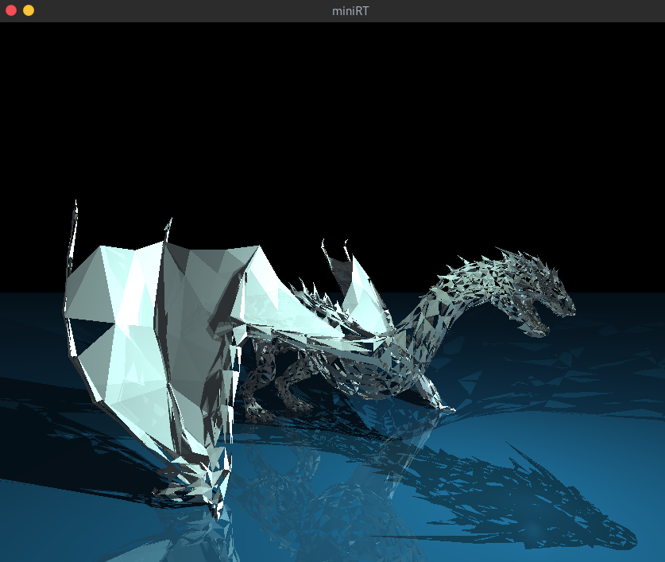

Package minirt_converter
Convert .obj files for 42's miniRT


Convert .obj files to .rt files to render a triangle mesh effect for miniRT project at 42.

Requirements
Installation
Clone the repository and change it to your working directory.
$ poetry install
Usage
minirt_converter [-h] filename color
Convert .obj files to .rt files to render a triangle mesh effect for miniRT project at 42.
positional arguments:
filename obj file to convert.
color the color in RGB format (e.g., 255,255,255).
optional arguments:
-h, --help show this help message and exit
example usage:
minirt_converter file.obj 255,255,255
Then, add Resolution, Ambient Light, cameras and light points to your scene.
The deer.rt, dragon.rt and wolf3d.rt scenes can be found here.


Acknowledgements
Many thanks to MrMoustach for contributing by adding a polygon support!
License

This work is licensed under a Creative Commons Attribution-NonCommercial 4.0 International License.
Sub-modules
minirt_converter.convert-
Convert .obj file to .rt file.
minirt_converter.helpers-
Command line helper functions …
minirt_converter.main-
Program's entrypoint.